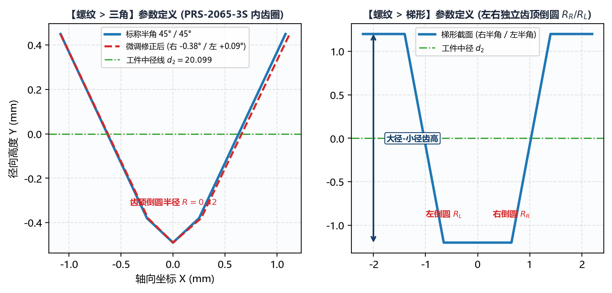

5.1 螺纹：三角与梯形齿形生成
切换至 绘图工具 -> 螺纹，前两个子标签页分别为 三角 与 梯形，用于生成精密三角螺纹、行星滚柱丝杠内/外螺纹、梯形丝杠（Tr）及锯齿形非对称螺纹的法向截面标准齿形 DXF。
一、三角 与 梯形 齿形几何结构对比

两者的数学构造均基于工件法向截面（生成的 *-info.txt 中自动标记 DXF 齿形类型 为 法向），核心区别在于齿顶平段与过渡圆角的定义方式：
三角（行星滚柱丝杠与精密三角螺纹）： 由左右两条倾斜齿侧直线向尖端交汇，并在顶部以单一齿顶倒圆半径() 作相切圆弧过渡（无水平齿底平段，特别契合行星滚柱丝杠螺母内齿圈如PRS-2065-3S的圆弧槽底特征）；梯形（梯形丝杠与精密传动螺母）： 具有明确的梯形平顶段，且支持对左右两个顶角分别独立设置齿顶倒圆半径（右:与左:）。
二、参数逐项详解与输入规范
| 参数名称 | 三角 |
梯形 |
单位 | 工程含义与输入规范 |
|---|---|---|---|---|
工件小径 () |
✓ | ✓ | 螺纹最小直径（必须满足 ）。 | |
工件中径 () |
✓ | ✓ | 螺纹中径基准（即生成 DXF 中 所在的基准直径）。 | |
工件大径 () |
✓ | ✓ | 螺纹最大直径（内螺纹滚道最深处直径或外螺纹外径）。 | |
工件螺距 () |
✓ | ✓ | 相邻两牙之间的轴向距离（单牙螺距）。 | |
工件头数 () |
✓ | ✓ | 正整数 | 螺纹头数（单头填 1，多头行星丝杠如 PRS-2065-3S 填 3 或 5）。系统自动按 计算法向截面缩减比。 |
右半角 () + #6bb1aa 修正框 |
✓ | ✓ | ∘^\circ∘ |
右侧齿面牙型半角（如米制三角螺纹填 30，梯形螺纹填 15，行星丝杠填 45）。右侧青绿色框（#6bb1aa）用于输入现场试磨角度微调补偿量（如 -0.05）。 |
左半角 () + #6bb1aa 修正框 |
✓ | ✓ | ∘^\circ∘ |
左侧齿面牙型半角 + 右侧青绿色微调框（#6bb1aa）。支持左右半角不等的非对称锯齿形螺纹建模。 |
齿顶倒圆半径 |
单一值 | 右: / 左: 双值 |
三角 模式下为尖端过渡圆弧半径；梯形 模式下分别为右上角与左上角的过渡圆角半径（必须 ）。 |
|
保存文件 + 选择文件 |
✓ | ✓ | 路径 | 指定输出的 .dxf 文件完整保存路径。 |
三、法向齿槽宽度自动折算原理与操作流程
- 多头大导程下的法向缩减效应：
当输入
工件螺距()、工件头数() 与工件中径() 后，软件内部会先求出中径螺旋升角 ，随后将轴向螺距 按 精确投影为法向齿距 。因此，对于多头大导程螺纹（如PRS-2065-3S，螺距2.1667 mm、头数3、导程6.5 mm），请务必如实填写工件螺距与工件头数，切勿把总导程填进工件螺距而把头数填为1！ - 生成与校验步骤：
- 填写上述全部几何参数并指定
保存文件路径； - 点击左下角
生成齿形文件按钮； - 右侧画布立即绘出绿色的标准法向齿形曲线，同时在目标路径下生成
<文件名>.dxf与<文件名>-info.txt。
- 填写上述全部几何参数并指定